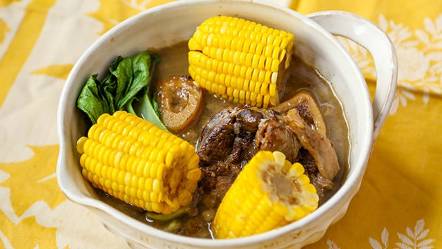

cebu
Pochero
While Pochero in Manila refers to a tomato-based stew with chorizo and plantains, Pochero Bisaya (Cebuano Pochero) is completely different. It is a clear, comforting beef soup very similar to Batangas Bulalo. What makes the Visayan version distinct is the use of local vegetables—specifically sweet corn and bamboo shoots (labong). The bamboo shoots give the rich bone marrow broth a distinct, earthy sweetness. It is a staple comfort food in Cebu, especially popular as a late-night recovery meal.

Gather
Ingredients
- Beef shank with bone marrow
- Sweet corn on the cob, cut into pieces
- Bamboo shoots (labong), sliced (if using fresh, boiled prior to remove bitterness)
- Pechay (bok choy) or cabbage
- Lemongrass, pounded
- Onions and garlic
- Whole black peppercorns
- Fish sauce (patis) or salte
- Water
Make it
Recipe
- In a large pot, submerge the beef shanks in water. Bring to a boil and diligently skim off the scum for a clear broth.
- Add the onions, garlic, peppercorns, and pounded lemongrass.
- Lower the heat, cover, and simmer for 2.5 to 3 hours, or until the beef is practically falling off the bone. Add hot water if the broth reduces too much.
- Once the meat is tender, add the sweet corn pieces and the bamboo shoots (labong). Simmer for another 15 minutes until the vegetables are tender.
- Season the broth with fish sauce or salt to taste.
- Turn off the heat and stir in the pechay or cabbage, letting the residual heat cook the greens.
- Serve piping hot with a dipping sauce of soy sauce, calamansi, and chili.